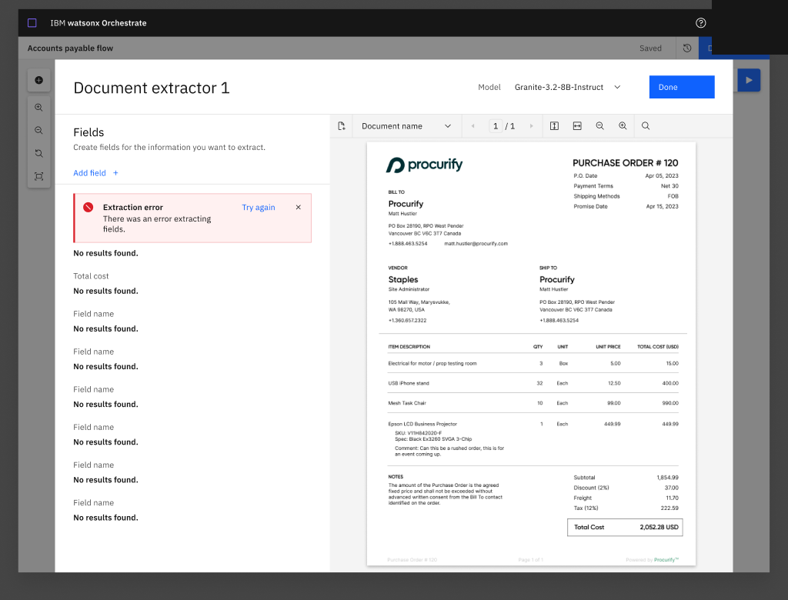
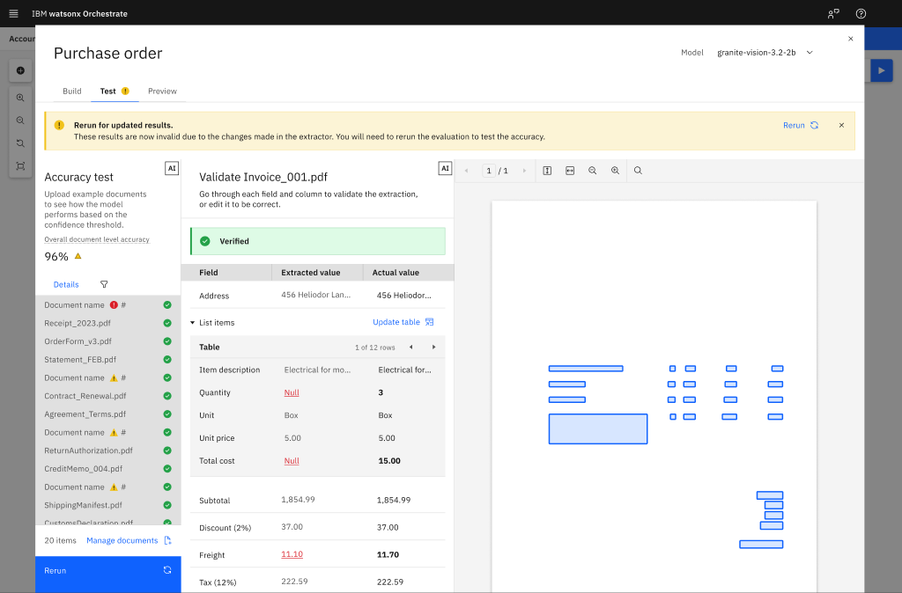
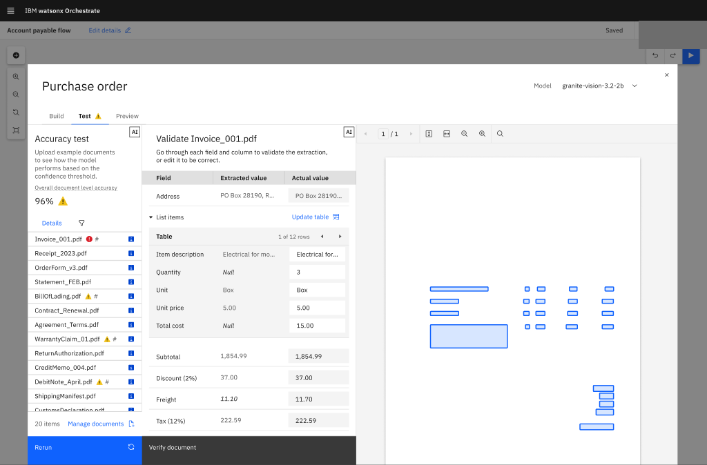

Document Processing / Watson Orchestrate
Make the trust loop visible.
Document automation does not stop at extracting a value. Builders need to know what the system recognized, where it is uncertain, how a person can correct it, and whether a change improved the result. I worked across Watson Orchestrate's Document Processing experience to help connect those moments into one platform workflow.
The work started with the platform, not the dashboard.
A document first had to be identified, matched to a schema, read for fields and tables, reviewed where confidence was low, and evaluated against a known reference.
I joined the work in 2025 and ramped up alongside the existing designer, Cate. Together, we made up the design team. I helped translate earlier product concepts into the newer agent model, delivered specifications and interaction designs for Document Classifier and Extractor, and contributed shared patterns across the canvas and component library.
I also worked with adjacent Chat, Carbon, and Tools teams where document review crossed product boundaries. The role was collaborative: connecting states and patterns rather than claiming the platform as a solo design.
Parallel feature arc
Classify, extract, review, then evaluate.
Developed in parallel with the broader canvas work, the feature moved from document setup into human review. Accuracy Evaluation came later, extending that trust loop into field-level quality inspection.
Document Processing feature arc
-
01 · Classify
Establish the document type
Suggested classes make the system recommendation visible before the workflow moves forward.
-
02 · Extract
Shape the information model
Field setup connects the source document to the structure the workflow needs.
-
03 · Review
Put uncertainty in context
Review keeps uncertain output and its source close enough for a person to resolve the difference.
-
Later phase · Evaluate
Make quality inspectable
The Accuracy Evaluator direction brought field-level quality into view near the end of the feature arc.
Classify

Extract


Review


Evaluate




Interface details use fictional sample data and are shown as design examples, not measured outcomes.
Trust comes from a workflow people can inspect.
Document Extractor and Evaluation released in July 2026, connecting extraction with a quality-review workflow people could inspect.
Return to the Canvas work